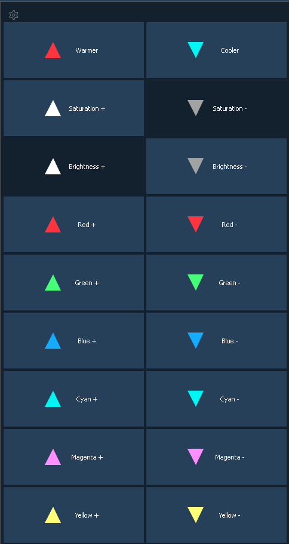

The Tinting Tools option is found by right clicking on the Color Picker tab (Using the Color Picker ).
Tint allows you to easily adjust color regardless of the color space that you're working in.
You can increase or decrease the saturation and brightness. You can make a color warmer or cooler, and you can add or remove colors.
